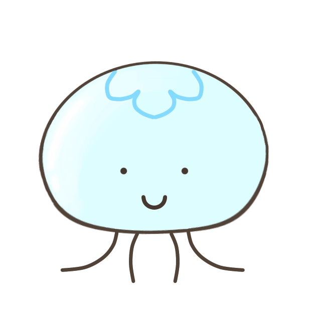

{% extends 'base.html' %}
{% block content %}

    <br>
    <br>
    <br>
    <br>
    <h2 class="onayami_content">{{onayami}}</h2>
    <h4>お悩みに</h4>
    <h2>おススメの本はこちら</h2>

    <br>
    <br>
    <table border bgcolor="#FFFFFF" width="80%">
    <div class="bookinfo_content">
        <tr><th>題名</th><td>{{title}}</td></tr>
        <tr><th>出版社</th><td>{{publisher}}</td></tr>
        <tr><th>著者</th><td>{{author}}</td></tr>
    </div>
    </table>

    <p class="box23">{{  comment  }}<br></p>
    <div class="img_box">
        <div class="kurage_img">
            
        </div>
        <div id="QR_button">
            <div id="img-qr"></div>
            <h4>ページを読み込む</h4>
        </div>
            
        
    </div>
    <a><h2>{{store}}の{{staff}}さん</h2>のおススメです</a>
    <br>
    <br><br>

    <ul class="url_twitter"> 
        <li class="twitter_content"><a href="{{tweeturl}}" class="tweet_content">tweet</a></li>
        <li><a href="{{buy_URL}}" class="tweet_content">本を買う</a></li>
        <li class="twitter_content"><a href="/main">もう一度</a></li>
        <li class="twitter_content"><a href="/#sec2">BookPost</a></li>
    </ul>
<script>
        // ID値「mitarashi」に対してCSSアニメ―ション「purun」を600ミリ秒の間隔を空けてループ再生
        looopAnimation("kurage", "purupuru", 800);
</script>


{% endblock %}